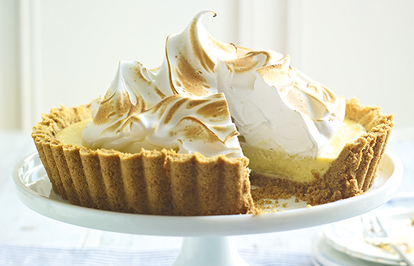

Lemon Meringue Pie

Ingredients
Crust Pastry
- Plain flour
- Caster sugar 1 tsp
- Unsalted butter 100 gm (chopped)
- Egg 1
- Vanilla essence 1 tsp
- Salt a pinch
For Lemon Filling
- Egg yolks 3
- Caster sugar 150 gm
- Lemon rind 2 tsp (finely grated)
- Juice of 3 lemons
- Egg whites 4
- Icing sugar for dusting
Buy These Ingredients Now
Cooking Directions
- To make the pastry, put plain flour, caster sugar and a good pinch of salt.
- Add the unsalted butter in a bowl and rub between your fingertips until the mixture resembles fine
breadcrumbs. Make a well in the centre combine the egg and vanilla essence.
- And 2 tsp water and pour in the well. Slowly stir together flat bladed knife, adding more flour if
the mixture is slightly sticky.
- Make the ball of the mixture, wrap in plastic wrap and refrigerate for 20 minutes.
- Preheat the oven to moderate 180 C. Gently roll the pastry between two sheets of baking paper to
about 2.5mm (1/8 inch) thick put some baking beans on the paper, then put into a lightly greased
baking tin, 22cm (8 ¾ inches).
- Blind bake for 10 minutes. Remove the baking beans and the paper. Bake for 10 more minutes, or until
the centre begins to colour. Remove from the oven and cool on a wire rack.
- To Prepare the Lemon Filling: Heat a medium pan of water until gently simmering.
- Whisk or beat the egg yolks and caster sugar in a large heat proof bowl until light and creamy. Add
the lemon rind, lemon juice and then the butter. Sit the bowl over the pan of simmering water and
whisk continuously for 15-20 minutes, or until thickened.
- When ready, the mixture will leave a ribbon when drizzled from the whisk.
- While the filling is still hot, pour into the cool, pre-baked flan case.
- Take a dry bowl and beat the egg whites with the help of beater and beat it become fluffy like snow.
- Add 2tbsp of caster sugar and beat it for few seconds.
- Place the meringue in a piping bag fitted with a 1 cm (1/2 inch) star nozzle.
- Starting in the centre, pipe the meringue in continuous concentric circle covering the entire flan,
keeping the meringue inside the pastry edge. Dust the surface with icing sugar. Bake for 5 minutes,
or until the meringue is lightly coloured. Leave to cool and then refrigerate for 20 minutes, or
until the filling is set.